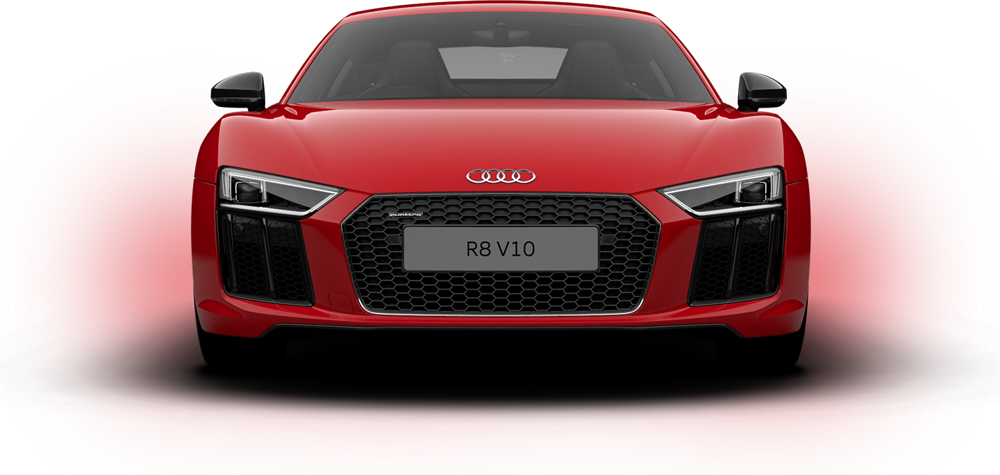
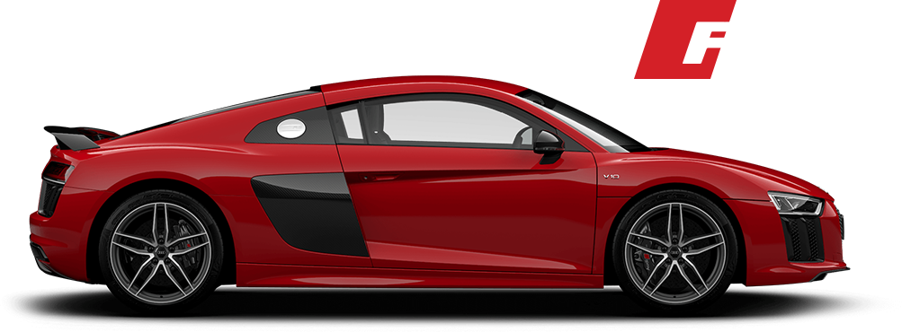
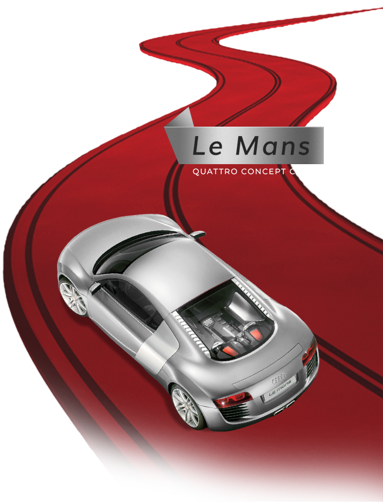
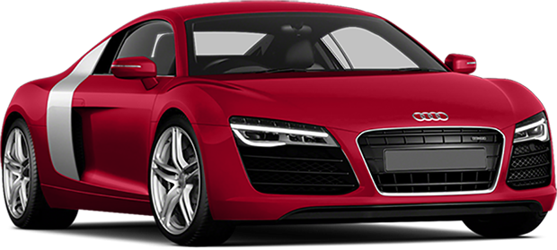
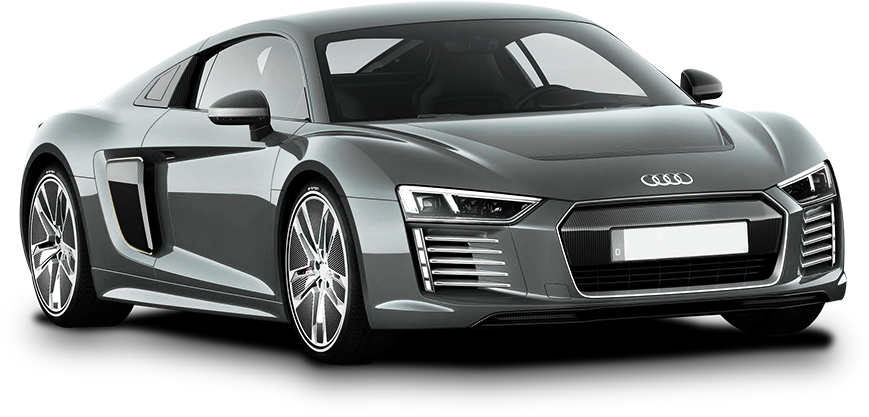
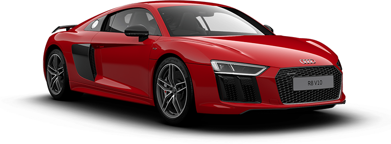
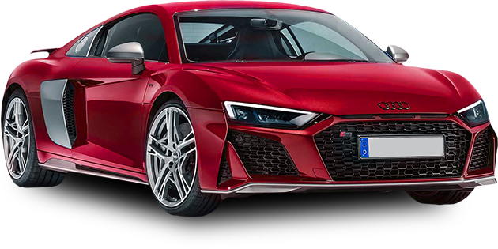

Text size
what’s so special
About The Audi R8?

supercars
have always been considered to be automotive pin-ups, but it might surprise you to know that when Audi finally broke the ice with the R8, none of the big German manufacturers had previously shown any interest in building a proper, road-going supercar.

That is until the 2003 Geneva Motor Show when Audi introduced something truly special, something that was both overengineered and understated.
It was the Audi Le Mans Quattro concept car, built to celebrate the third consecutive Le Mans triumph by the R8 race car with cutting edge technology and a twin-turbo V10 TFSI engine. The rest, can only be described as motoring history.
The Audi R8 is a different breed of supercar - a car that’s equally at home on the streets as it is on the track. With a new Audi R8 poised to hit the roads, we’re taking a look at what’s so special about the different generations of the Audi R8 Coupé and Audi R8 Spyder that has helped them to become one of the most popular everyday supercars.

audi r8
1st GENERARION
2006-2015

Following the success of its prototype at the Geneva Motor Show, Audi rallied its efforts to produce the first road legal R8, launched at the 2006 Paris Auto Show. It shared the same platform, suspension and transmission as the Lamborghini Gallardo.
It was a knockout and soon rivaled supercar leaders the Porsche 911 Carrera 4s, the Aston Martin Vantage and the BMW M6.
- The first Audi R8 began production in 2006. Its powertrain is a RS-4 derived mid-mounted 4.2-litre FSI V8 producing 426 PS. It boasted a single-frame grille, extended spoiler and large diffuser openings.
- Unusually for a supercar, the first production Audi R8 has a manual, 6-speed transmission and a silhouette that looks more like a jet plane than a road car.
- With an rpm of up to 8,250, once heard, the roar from the exhaust is never forgotten.
- In 2009, the Audi R8 range was extended to include a more powerful 525 PS 5.2 litre V10 FSI engine. It’s a Gallardo-derived V10, also used in the S6 and S8 of the era.
- A convertible Spyder option followed in 2010, first with the 5.2 FSI quattro, and later (in 2011) with the 4.2 FSI quattro engine.
- The 2012 facelift included an upgrade to a 7-speed S Tronic transmission, LED headlights and Audi Magnetic Ride adaptive damping which became standard on all V10 versions.
- 2013 saw the introduction of a flagship 550 horsepower R8 V10 Plus, boasting a whopping 550PS. This was followed by a rip-roaring V10 LMX in 2014 with a staggering 570 PS!
Fun Fact
A first rough outline of the R8 silhouette, the RSQ, a futuristic concept car, was made exclusively for the 2004 movie I, Robot.
- Engine 5.2L V10 FSI / 4.2L V8 FSI
- Body Type 2 door coupé or 2 door convertible
- Transmission Manual 6-speed
- Length 4,431 mm
- Width 2,029 mm
- Height 1,252 mm
- Power 525 PS / 420 PS
- RPM 8250 / 8000
- Top speed 196.35 mph
- 0-62 MPH 3.7 sec
- 0-120 MPH 11.8 sec
- Kerb Weight 1,625 kg
audi r8
E-TRON
2015

This showcase for Audi’s electrical system know-how was built to order on a special line at Audi’s Neckarsulm plant in Germany. Production was ceased 19 months into production, allowing Audi to concentrate on more practical EVs such as SUVs and hatchbacks.
- With two electric, rear mounted motors, the 462PS Audi R8 e-tron uses a combined lithium battery power of 96 kWh(weighing 577kg) to provide a range of up to 280 miles.
- Available for a limited period in Europe only, with a price tag of €1,000,000, just 100 production models were sold.
- We can’t help wonder whether it was the high price tag or the quiet running that contributed to the low sales.
Fun Fact
A first rough outline of the R8 silhouette, the RSQ, a futuristic concept car, was made exclusively for the 2004 movie I, Robot.
- Motor 5.2L V10 FSI / 4.2L V8 FSI
- Body Type 2 door coupé
- Transmission Automatic 1-speed
- Length 4,431 mm
- Width 2,029 mm
- Height 1,252 mm
- Power 462 PS
- Top speed 155 mph
- 0-62 MPH 3.9 sec
- Kerb Weight 1,780 kg
audi r8
2nd GENERARION
2015-2019

This time, more than ever, the R8 was a race car in disguise, sharing 50% of parts with the race-ready Audi R8 GT3. This granted grippier road holding, razor sharp precision, more driving excitement and undiluted track-ready performance for a car with licence plates!
- This newer generation R8 is presented with V10 and V10 Plus options, both teamed with a 7-speed S-Tronic dual clutch automatic transmission.
- Analogue dials have been replaced with a 12.3in, contrast-rich TFT screen.
- Other significant changes included a more compact body with sharper looks, and of course, better performance.
- Weight reduction is made possible by utilising the Audi Space Frame, taking advantage of aluminium and carbon fibre reinforced plastics (CFRP) which are both light and rigid.
- Lighter body weight and more hi-tech electronics mean more control, especially when used in conjunction with the retractable spoiler that automatically deploys at high speeds.
- The interior is minimalist with adjustable, heated, Nappa leather sports seats and race car style dashboard.
- For those who like a more carefree drive, the convertible Spyder option appeared in 2016.
- The Audi R8 RWS provided a more traditional supercar feel. A limited run of 999 rear-wheel drive cars, powered by the standard 540 PS V10, was introduced in 2017.
Fun Fact
A plaque detailing the car’s unique production number is displayed on the passenger side of the dashboard.
- Engine 5.2 litre V10/ V10 Plus FSI engine
- Body Type 2 door coupé or 2 door convertible (from 2016)
- Transmission Automatic 7-speed
- Length 4,426 mm
- Width 1.940 mm
- Height 1,240 mm
- Power 540 PS / 610 PS
- RPM 8250
- Top speed 198 mph
- 0-62 MPH 3.5 sec
- 0-120 MPH 11.2 sec
- Kerb Weight 1,555 kg
audi r8
2019 UPDATE

The highly anticipated mid-generation update promises to be much more than just a design facelift. From the looks of it, the new Audi R8 will be sharper, more focused and more aggressive on the outside, and more inviting once you sit behind the wheel.
- The R8 Coupé and Spyder 5.2-litre V10 Quattro will have 578 PS, with a new, more powerful 620 PS V10 Performance Quattro adding a new name to the range.
- Audi is claiming this even lighter model will be capable of 0-62mph in 3.1 sec and have a top speed of 205mph!
- We’ve been hearing about a retro styling with a widened and lowered grille, reminiscent of the ‘80s and a re-designed rear bumper with fatter exhausts.
- Modified suspension will enhance the driving dynamics, making it more efficient in rain or snow.
- Personalization will play a key role in the updated Audi R8 as it promises more colours, textures and stitching options than ever before as well as a whole host of upgradeable options.
The all-new Audi R8 is just around the corner, each with the potential to be a unique piece of art on wheels, and every drive an unforgettable experience.
Be sure to follow Swansway Audi to always be kept informed about its arrival!